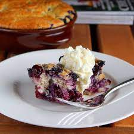

Blueberry Cobbler

A piece of Blueberry Cobbler - Ala Mode
Ingredients
- 1/2 cup butter
- 1 cup self-rising flour
- 1 cup white sugar
- 1 cup milk
- 4 cups fresh blueberries
Steps
- Preheat the oven to 350 degrees F . Place butter in an 8-inch, square baking dish.
- Melt butter in the preheating oven, about 5 minutes. Remove from oven.
- Meanwhile, mix flour, sugar, and milk in a bowl until combined; pour batter over melted butter in the baking dish. Scatter blueberries over batter.
- Bake in the preheated oven until a toothpick inserted into the center comes out clean, about 1 hour.